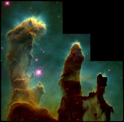
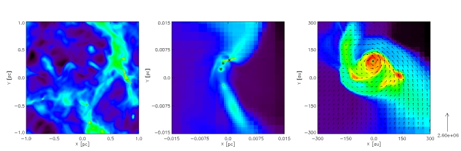

Research: Turbulent GMCs and the IMF
 The majority of star formation occurs in dense turbulent clouds of molecular Hydrogen. These Giant Molecular Clouds (GMCs) set the stage for the formation of protostellar systems by the gravitational collapse of dense regions within the GMC that fragment into smaller core components that in turn condense into stars. Hence the natal environment, through the complex interplay of gravity, magnetic fields, and supersonic turbulence, is an important influence on star formation. Exactly how these mechanisms shape the final properties of stars both collectively and individually is poorly understood. Important questions include: What is the origin of the stellar Initial Mass Funtion (IMF)? How is the final mass of a star determined? What determines whether a core forms a single star, binary, or multiple system?
 There has been a wide body of observation comparing and cataloging the
properties of dense cores and Young Stellar Objects (YSO) across diverse star
formation sites. This evidence suggests that
core properties are greatly influenced by their proximity to other YSO
and cores, which may be intimately related to the generation and sustenance
of supersonic turbulence. Current theoretical thinking connects the IMF
to the large-scale turbulence within a GMC.
In this picture,
the distribution
of densities generated within a turbulent medium naturally gives rise to a
power-law IMF similar to what is observed at the high end, and a substellar
IMF which depends on the degree of turbulence of the parent region.
Observation shows that the IMF of stars and prestellar
cores are virtually identical, and
so study of the initial conditions, properties, and evolution of prestellar
cores is vital to answer the above questions.
There has been a wide body of observation comparing and cataloging the
properties of dense cores and Young Stellar Objects (YSO) across diverse star
formation sites. This evidence suggests that
core properties are greatly influenced by their proximity to other YSO
and cores, which may be intimately related to the generation and sustenance
of supersonic turbulence. Current theoretical thinking connects the IMF
to the large-scale turbulence within a GMC.
In this picture,
the distribution
of densities generated within a turbulent medium naturally gives rise to a
power-law IMF similar to what is observed at the high end, and a substellar
IMF which depends on the degree of turbulence of the parent region.
Observation shows that the IMF of stars and prestellar
cores are virtually identical, and
so study of the initial conditions, properties, and evolution of prestellar
cores is vital to answer the above questions.
The image below shows the log column density from a turbulent molecular cloud simulation. The panels show, from left to right, the full simulation, a filament forming cores, and a protostellar disk. Velocity vectors overlay the third panel.


An animation of density volume rendering of a magneto-hydrodynamic simulation showing gas filaments formed in an infrared dark cloud (IRDC) 5 parsecs in size, 800,000 years after the turbulent region began gravitational collapse is created by Tim Sandstrom (NASA visual team). A rotation around the IRDC zooms in on the main filament 4.5 parsecs in length showing a dense molecular core of 0.1 parsec size. Continued simulation of this region shows further collapse, filamentation, protostellar outflows and the early stage formation of a high mass star.